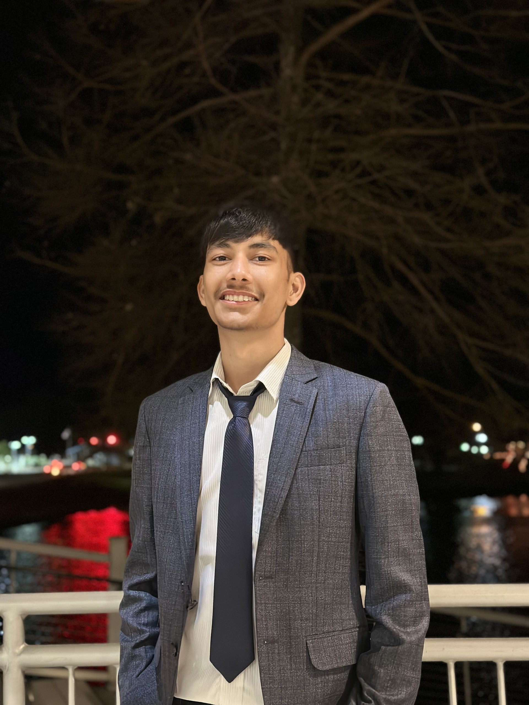

Sulav Dhakal
402 Filhiol Monroe, LA | 318-884-7596 | dhakal_sulav@icloud.com

Objective
I am a Sophomore Computer Science student at the University of Louisiana at
Monroe, with completed coursework in Data Structures, Advanced Discrete Mathematics,
Python, and Java and currently learing web devlopment. I am eager to apply
my coding, problem-solving, and leadership skills in an internship, with a
growing interest in software development,web development, and AI. I am
seeking opportunities to contribute to impactful projects and gain hands-on
experience in a professional environment.
Education
- University of Louisiana - Monroe Monroe, LA Undergraduate
January 2023 - Present, Major: Computer Science.
- St. Xavier’s College Kathmandu, Nepal
Highschool July 2019-December 2021, Major: Science
Skills
Language
- Java
- Python
- HTML & CSS
General
- Microsoft Office
- Photoshop
- Teamwork and time management
- Problem-solving abilities
- Adaptability
- Leadership skills
Experience
President of Hawk’s Nest, University of Louisiana – Monroe.
Hawk’s Nest is a recognized student organization (RSO) which fosters
unity on campus by engaging students in activities focused on mental health,
relationships, success, and community support, while strengthening connections within
the campus and community.
Organized and coordinated various events and activiteis to engage student and help them explore campus and make
connections and help them strenthen their bond with the community.
Nepal Esports Official, Nepal — MANAGER
February 2020 - January 2022
Managed line-ups for the Nepal Esports PUBG pro team and organized daily
scrims involving over 80 teams.
Coordinated the Wild Card Pro League with participation from 25+ pro PUBG
teams across Asia
Led the team to the SEA (Southeast Asia) Wildcard and fostered relationships
with other teams for mutual growth
Managed a Discord community with over 5,000 active users
Vice President of USM Club, St. Xavier’s College
Universal Solidarity Movement: Universal Solidarity Movement is an attempt to help
people rediscover their inter-relatedness not only with one another but also with
nature and with its creation and has a moto, “Instead of cursing the darkness, light a
candle”.
Collected 5000+ books and other library materials from more than 100 schools and
organizations to establish library in remote area of Nepal (Dolakha).
Organized inter college quiz where students participated in groups of two where 200+
teams participated.
Organized many volunteering activities in old age homes and dog shelters.
Awards and Certifications
Hackathon Winner
Won the first-ever hackathon at the University of Louisiana at Monroe by developing a mobile
wallet integration feature for university cards, showcasing innovative problem-solving skills